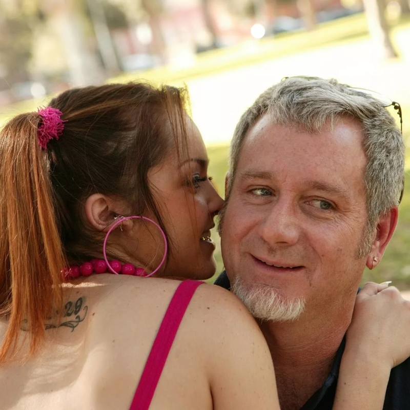

7-Punkte-Plan für mehr Mut

Ja, Sie können es schaffen, sich mehr zuzutrauen. Unser Aufbauplan erklärt, wie Sie zu mehr Courage finden und in sieben Schritten mehr Mut entwickeln.

Jeden Monat neu und unser ganzer Stolz
Jeden Monat neu und unser ganzer Stolz
Ja, Sie können es schaffen, sich mehr zuzutrauen. Unser Aufbauplan erklärt, wie Sie zu mehr Courage finden und in sieben Schritten mehr Mut entwickeln.

Herausforderungen gehören zum Leben dazu, wie das Salz in der Suppe. Ohne sie wäre das Leben fad und langweilig. Für viele Menschen ist es dies tatsächlich, weil sie sich ihrer persönlichen Herausforderungen nicht stellen. Ich gebe dir hier 3 grundlegende Tipps für mehr Mut weiter.

Was dich glücklich macht, ist eine wirklich gute Frage. Den Weg zum eigenen Glück zu finden ist eine essentielle Kraftquelle, die es uns ermöglicht, unser wirklich eigenes Leben zu leben, zu lernen und uns selbst zu entfalten. Was dich glücklich macht, weißt dabei nur du selbst. Deshalb möchte ich dir in diesem Artikel einen einfachen Weg zeigen, wie du das Glück in deinem Leben findest und etablierst.
Wenn dir das Leben anstrengend vorkommt, kann etwas nicht stimmen. Antrengende Anstrengung ist nicht die Wahrheit des Lebens. In diesen Momenten können wir aufwachen und uns daran erinnern, dass das Leben aus Leichtigkeit von selbst geschieht. Erfahre in diesem Artikel, wie du dabei vorgehen kannst.